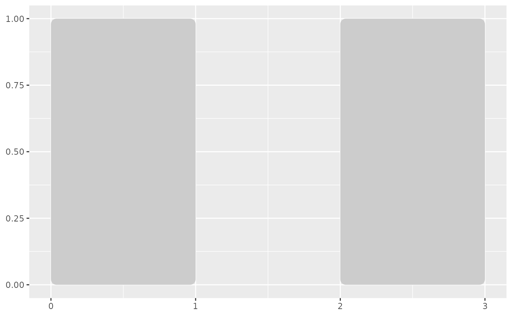

Draw rectangles from xmin, xmax, ymin, and ymax aesthetics. The
corner radius is measured in millimetres and stays fixed when axis limits
change. Fill, alpha, colour, linewidth, and linetype follow rectangle
aesthetics. Cartesian coordinates and coordinate flipping are supported.
Usage
geom_round_rect(
mapping = NULL,
data = NULL,
stat = "identity",
position = "identity",
radius = 2,
na.rm = FALSE,
show.legend = NA,
inherit.aes = TRUE,
...
)Examples
bands <- data.frame(xmin = c(0, 2), xmax = c(1, 3), ymin = 0, ymax = 1)
ggplot2::ggplot(bands, ggplot2::aes(
xmin = xmin, xmax = xmax,
ymin = ymin, ymax = ymax
)) +
geom_round_rect(fill = "grey80", colour = NA)
